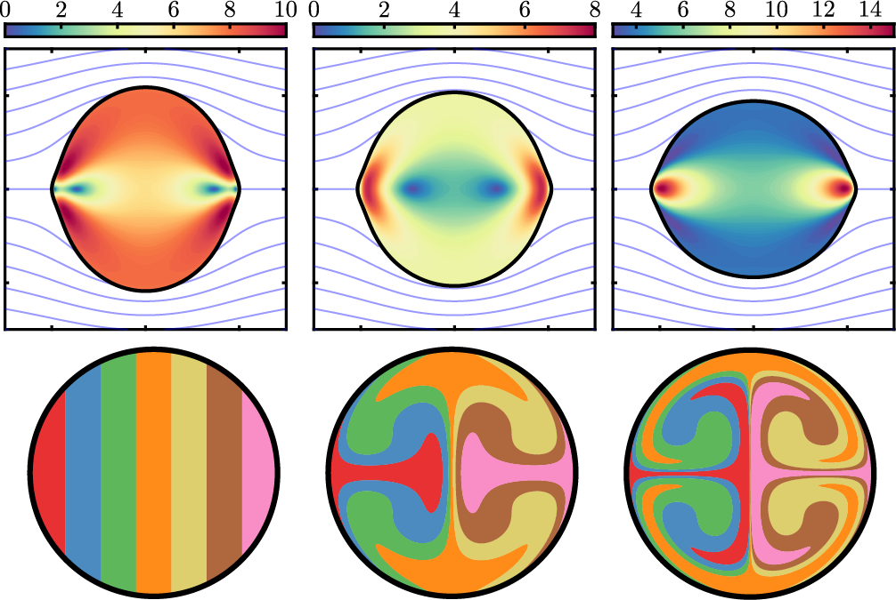
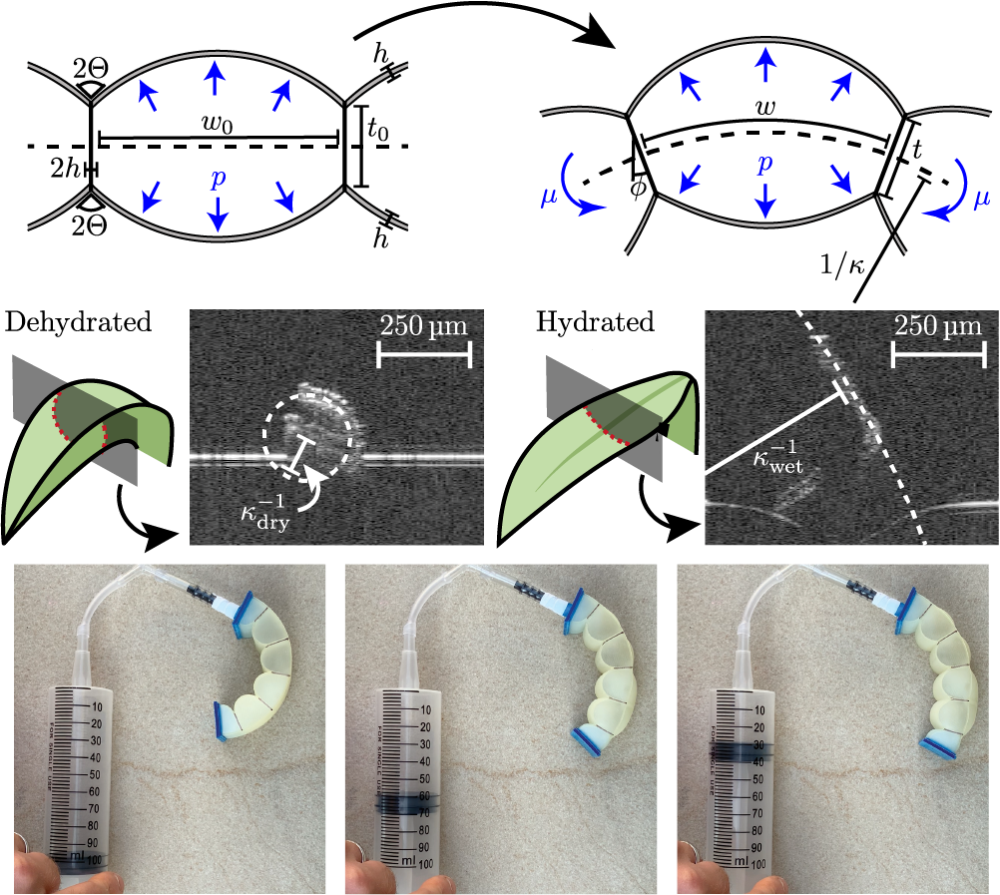
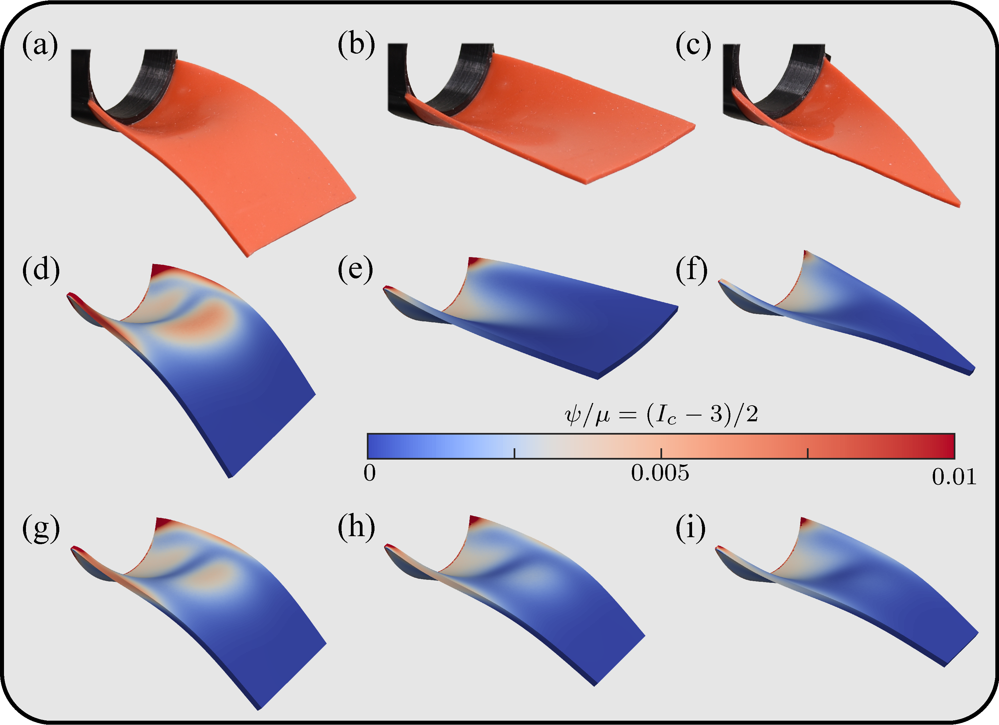
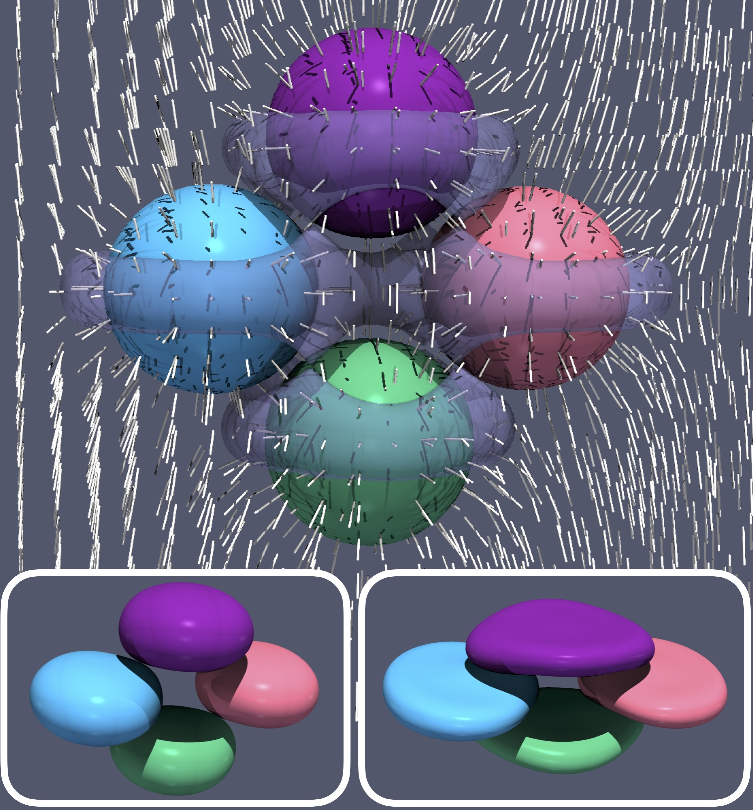
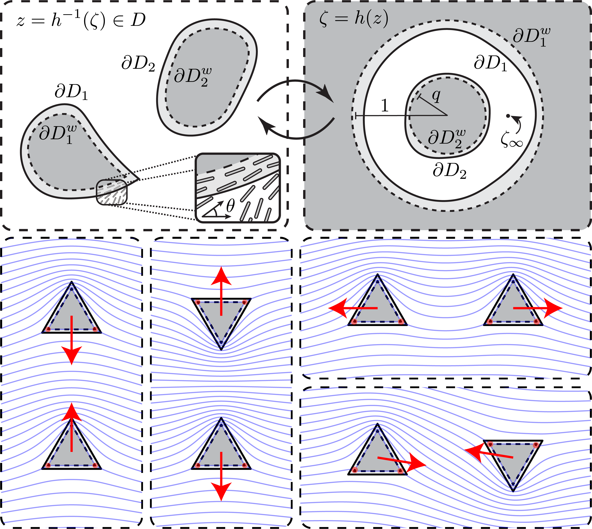
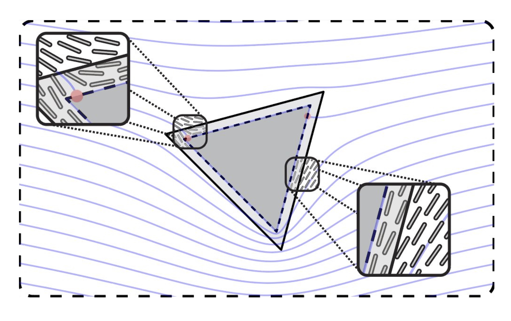
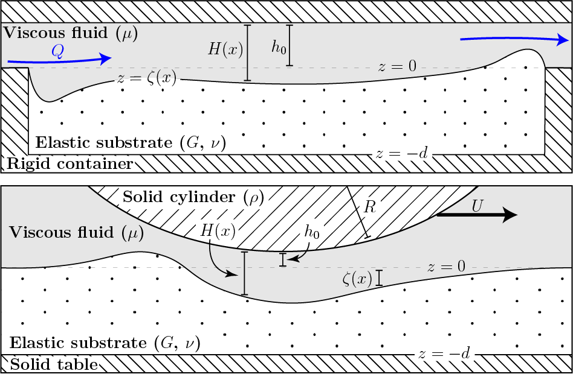
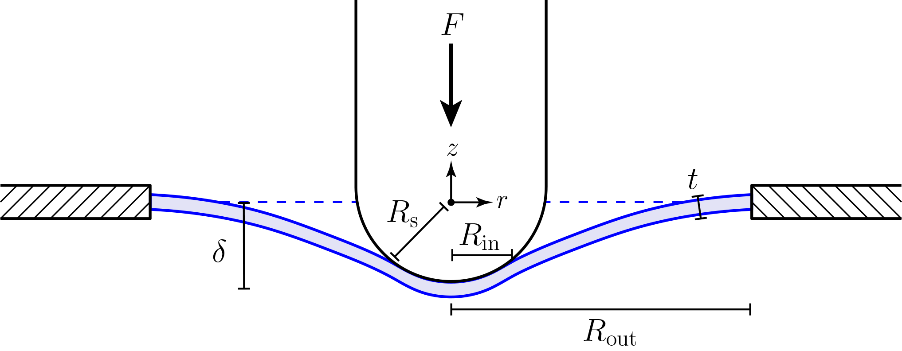

Recent Publications
See here for some animations of two-dimensional nematic liquid crystals.
Active nematic response to a deformable body or boundary: surface deformations and anchoring-induced flow
Chandler, T. G. J. & Spagnolie, S. E. (2025)
|
A body immersed in a nematic liquid crystal disturbs the fluid's preferred molecular configuration and increases its stored elastic energy. In an active nematic, the fluid components also generate a stress in the bulk fluid. By introducing either an immersed body or boundary, a large scale flow can be triggered due to anchoring boundary conditions alone—a global pressure built by active stresses at equilibrium is instantly released everywhere. The fluid then imposes viscous, elastic, and active stresses on such surfaces which, if compliant, may result in a surface deformation. We study the deformations and stresses of a linearly elastic body placed in an active nematic in two dimensions. Using complex variable techniques, exact expressions for the fluid flow, director field, surface tractions, and body deformation are derived. Qualitative differences between elastic and active stress-driven deformations are identified, depending on an active Ericksen number, anchoring conditions, and body material properties, thereby suggesting a new method for measuring mechanical stresses in active anisotropic environments. Flow profiles, external confinement, and anchoring-induced stirring are also addressed. |
 |
Mechanics of pressurized cellular sheets
Chandler, T. G. J., Ferria, J., Shorthose, O., Allain, J.-M., Maiolino, P., Boudaoud, A., & Vella, D. (2025)
|
Everyday experience shows that cellular sheets are stiffened by the presence of a pressurized gas: from bicycle inner tubes to bubble wrap, the presence of an internal pressure increases the stiffness of otherwise floppy structures. The same is true of plants, with turgor pressure (due to the presence of water) taking the place of gas pressure; indeed, in the absence of water, many plants wilt. However, the mechanical basis of this stiffening is somewhat opaque: simple attempts to rationalize it suggest that the stiffness should be independent of the pressure, at odds with everyday experience. Here, we study the mechanics of sheets that are a single-cell thick and show how a pressure-dependent bending stiffness may arise. Our model rationalizes observations of turgor-driven shrinkage in plant cells and also suggests that turgor is unlikely to provide significant structural support in many monolayer leaves, such as those found in mosses. However, for such systems, turgor does provide a way to control leaf shape, in accordance with observations of curling upon drying of moss leaves. Guided by our results, we also present a biomimetic actuator that uncurls upon pressurization. |
 |
Geometric dependence of curvature-induced rigidity
Mao, H., Chandler, T. G. J., Han, M., & Spagnolie, S. E. (2025)
|
Bending the edge of a thin elastic material promotes rigidity far from its clamped boundary. However, this curvature-induced rigidity can be overwhelmed by gravity or other external loading, resulting in elastic buckling and large deformations. We consider the role of body geometry on this competition using experiments, numerical simulations, and reduced-order models. Finite element simulations are performed using a model nonlinear hyperelastic material, and a theoretical framework is proposed that incorporates small lateral curvatures, large longitudinal rotations, and a varying cross-sectional width. A particular focus is on the comparison between rectangular and triangular sheets, and trapezoidal sheets in between. Sheet geometry affects downward tip deflection by changing the relative importance of the sheet’s weight and the rigidity provided by curvature, often in subtle ways. In extreme cases, non-monotonic deflection is observed with increasing sheet length, and a region of hysteretic bistability emerges, becoming more pronounced with rectangular sheets and large imposed curvatures. These findings demonstrate the profound impact of geometry on the competition between curvature-induced rigidity and gravity-induced deformation in thin elastic materials. |
 |
Rigid and deformable bodies in nematic liquid crystals (review)
Chandler, T. G. J. & Spagnolie, S. E. (2024)
|
A nematic liquid crystal, a phase of matter composed of rod-like molecules, exhibits a tendency towards uniform molecular alignment. Bodies inserted into such a fluid can disturb this orientational order, resulting in elastic stresses bound in the bulk fluid and exerted on the body surfaces, even at equilibrium. One avenue of energy relaxation is by a change in the immersed particle positions and orientations, leading to elastic forces and torques that bodies exert on each other through the fluid. Soft particles offer an additional means of relaxation, deformation, which in turn can modify particle interactions through the LC medium. We review classical work on rigid particles and their interactions in nematic liquid crystals, and more recent work on the shapes and interactions of deformable bodies in LCs. In addition to experimental findings, a number of common mathematical modeling techniques, both in terms of a director field n and a second-order tensor field Q, are introduced throughout, including derivations of body forces and torques, and, of particular use in the study of deformable media in LCs, surface tractions and moments. |
 |
Exact and approximate solutions for elastic interactions in a nematic liquid crystal
Chandler, T. G. J. & Spagnolie, S. E. (2024)
|
Anisotropic fluids appear in a diverse array of systems, from liquid-crystal displays to bacterial swarms, and are characterized by orientational order. Large colloidal particles immersed in such environments disturb the medium's orientational order, however, resulting in a stored elastic energy within the bulk. As a consequence, multiple immersed bodies interact at equilibrium through fluid-mediated forces and torques, which depend on the bodies' positions, orientations, and shapes. We provide the equilibrium configuration of a model nematic liquid crystal with multiple immersed bodies or inclusions in two-dimensions, as well as the associated body forces, torques, and surface tractions. A complex variables approach is taken which leans on previous work by Crowdy (2020) for describing solutions with multiply-connected domains. Free periods of a complex director field, which correspond to topological defect positioning and net topological charge, are determined numerically to minimize a global stored elastic energy, including a contribution of a weak (finite) anchoring strength on the body surfaces. Finally, a general, analytical description of two-body far-field interactions is provided, along with examples using two cylindrical inclusions of arbitrary position and size, and two triangles of arbitrary position and orientation. |
 |
A nematic liquid crystal with an immersed body: equilibrium, stress, and paradox
Chandler, T. G. J. & Spagnolie, S. E. (2023)
|
We examine the equilibrium configurations of a nematic liquid crystal with an immersed body in two-dimensions. A complex variables formulation provides a means for finding analytical solutions in the case of strong anchoring. Local tractions, forces, and torques on the body are discussed in a general setting. For weak (finite) anchoring strengths, an effective boundary technique is proposed which is used to determine asymptotic solutions. The energy-minimizing locations of topological defects on the body surface are also discussed. A number of examples are provided, including circular and triangular bodies, and a Janus particle with hybrid anchoring conditions. Analogues to classical results in fluid dynamics are identified, including d'Alembert's paradox, Stokes' paradox, and the Kutta condition for circulation selection. |
 |
Validity of Winkler's mattress model for thin elastomeric layers: Beyond Poisson's ratio
Chandler, T. G. J. & Vella, D. (2020)
|
Winkler’s mattress model is often used as a simplified model to understand how a thin elastic layer, such as a coating, deforms when subject to a distributed normal load: the deformation of the layer is assumed proportional to the applied normal load. This simplicity means that the Winkler model has found a wide range of applications from soft matter to geophysics. However, in the limit of an incompressible elastic layer the model predicts infinite resistance to deformation, and hence breaks down. Since many of the thin layers used in applications are elastomeric, and hence close to incompressible, we consider the question of when the Winkler model is appropriate for such layers. We formally derive a model that interpolates between the Winkler and incompressible limits for thin elastic layers, and illustrate this model by detailed consideration of two example problems: the point-indentation of a coated elastomeric layer and self-sustained lift in soft elastohydrodynamic lubrication. We find that the applicability (or otherwise) of the Winkler model is not determined by the value of the Poisson ratio alone, but by a compressibility parameter that combines the Poisson ratio with a measure of the layer’s slenderness, which itself depends on the problem under consideration. |
 |
Indentation of suspended two-dimensional solids: The signatures of geometrical and material nonlinearity.
Chandler, T. G. J. & Vella, D. (2020)
|
The material characterization of ultra-thin solid sheets, including two-dimensional materials like graphene, is often performed through indentation tests on a flake suspended over a hole in a substrate. While this ‘suspended indentation’ is a convenient means of measuring properties such as the stretching (two-dimensional) modulus of such materials, experiments on ostensibly similar systems have reported very different material properties. In this paper, we present a modelling study of this indentation process assuming elastic behaviour. In particular, we investigate the possibility that the reported differences may arise from different geometrical parameters and/or non-Hookean deformations, which lead to the system exploring nonlinearities with geometrical or material origins. |
 |